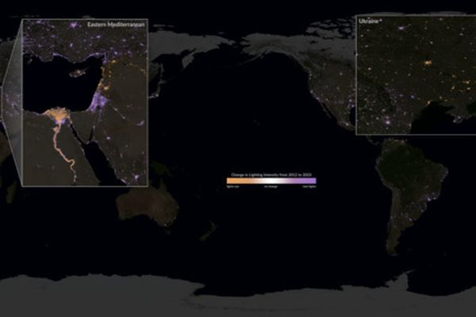
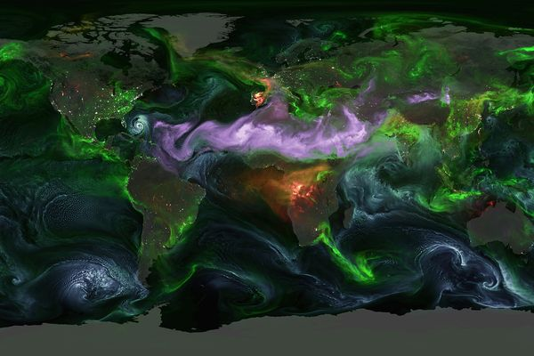
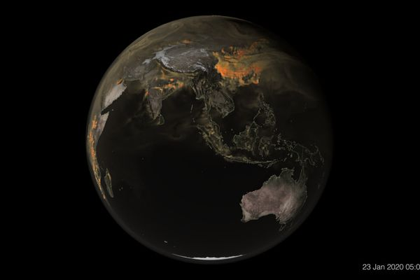
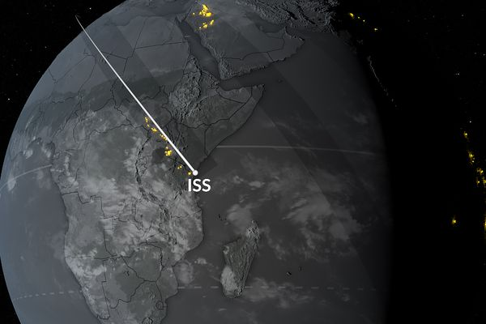
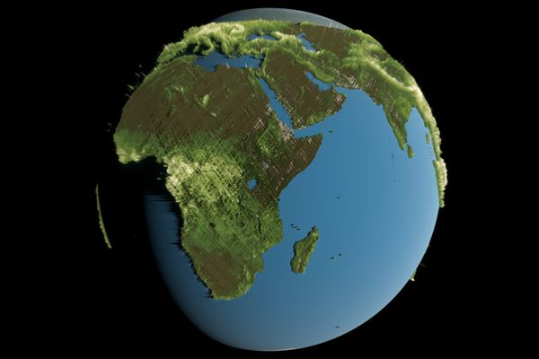
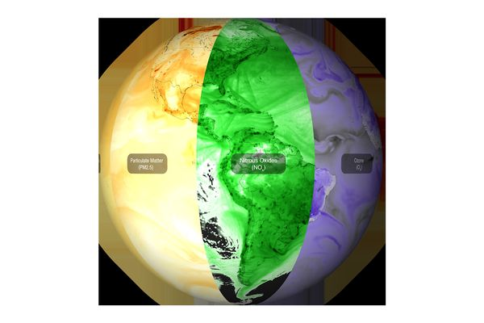

Ten NASA Earth visualisations
Hear what the picture can't show.
NASA's Earth Information Center turns our changing planet into images. 3Sama plays them. Pick a visualisation, drag a finger across it, and hear its brightness as loudness, its latitude as pitch, its colours as instruments. No sight required.
Press Space to play · H for help · L for the sound legend
Side A & Side B
Every track is a still frame from the official challenge resource list, analysed offline into a 32 × 24 brightness / hue / edge grid.

Night Lights, 2012 → 2023change VIIRS · 2 dates · 1:24 ▶ 02 Sea Surface Currents & Temperature
ECCO · continuous field · 1:48
▶
03
Sea Surface Currents & Temperature
ECCO · continuous field · 1:48
▶
03

GEOS Aerosolslayers dust · smoke · sea salt · 2:10 ▶ 04
DYAMOND Carbon Dioxide CO₂ ppm · plumes · 1:36 ▶ 05
Lightning from the ISS LIS 2017–2023 · percussive · 0:58 ▶ 06
GEDI Forest Height canopy elevation · 1:12 ▶ 07 Perpetual Ocean 2
boundary currents · 1:30
▶
08
Perpetual Ocean 2
boundary currents · 1:30
▶
08
 Atmospheric River, 3D
moisture transport · 1:05
▶
09
Atmospheric River, 3D
moisture transport · 1:05
▶
09

Air Quality Model Runs NO₂ · PM2.5 · 1:20 ▶ 10 Caldwell 73 — the reference
NASA sonification · prior art · 0:44
▶
Caldwell 73 — the reference
NASA sonification · prior art · 0:44
▶
The three rules
Everything else is built on top of these. They follow cross-modal correspondences that hold across cultures, and they are documented with sources on the Method page.
Up is high
Latitude becomes pitch on a log scale, 200–1600 Hz. Twelve steps of equal musical size, so the top of the map is never shrill.
Left is left
Longitude becomes stereo position, pan = 2x − 1. With headphones the map lies in front of you from Lisbon to Tokyo.
Bright is loud
Luminance becomes gain through a limiter fixed at −12 dB, so a city at night can be loud without ever hurting.
“The picture is already an encoding. We are just reading it out loud.”
Design principle · 3Sama